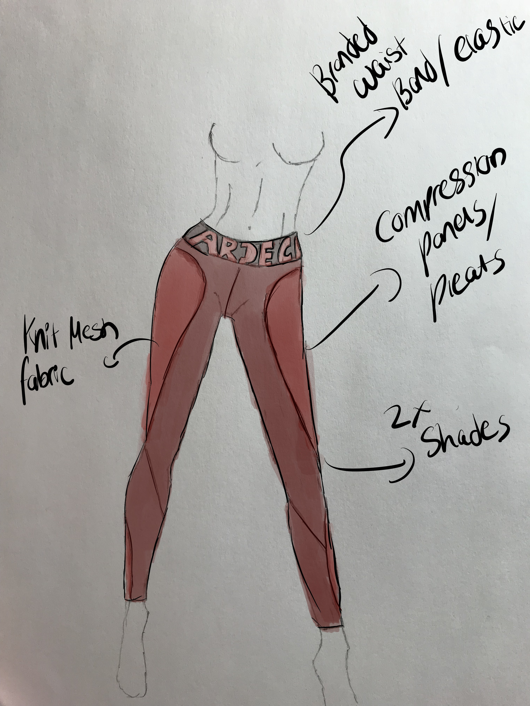
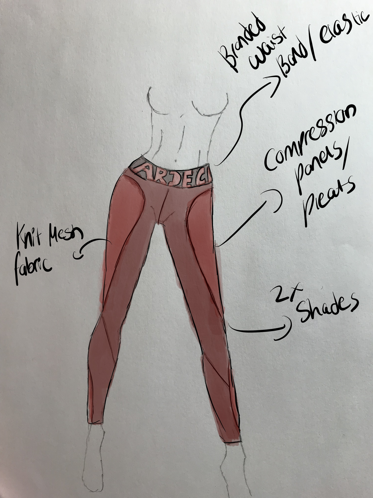

1. Drawings/Sketch
Flat Sketch: Detailed Black and White Sketch
Close-up, and multiple angles
Construction: Types of stitching, seaming, finishing, detail in terms of hemming or
design
- Use arrows to clearly mark where specific construction is to be used
- Print-Fabric Page: (If Applicable): indicate where you would like a print/or
fabric
- Colorway Page: Identifies the colors that will be used in design, and where
- Bill of Material Page (BOM): All materials used in constructing the garment
- Colorways / Fabric Maps: color sketches of the garment and clear labeling of what
fabrics and
colors go where
2. Measurement
Some suppliers offer premade templates (e.g. basic t-shirt structure)
Spec Callouts: measurements of a seamline placements, pocket sizes and placements and
any other details
Graded Spec: (If applicable) physical pattern pieces
Chart includes measurements of standard garment POM’s (Point of Measure) that are measureable on
finished garments and serves as a way to make sure everything measures to spec
3. Fabrics
Include samples if applicable
4. Trim Design
Labels, outside of the product that makes it unique
Size, color, and location of zippers, buttons, elastic etc…
Labeling: where they go, (e.g. neck labels), exterior heat seals, embroidery and
hangtags
Grading: Medium, Small measurements for each size or default templates provided by
supplier
Print/Embroidery Sample: What gets printed on product, color width etc
Photos/physical references: optional examples
3. Packaging
Packaging specifications instructions on how to fold or hang it and any materials required such as
tissue, cardboard sleeves, polybags etc..

 
